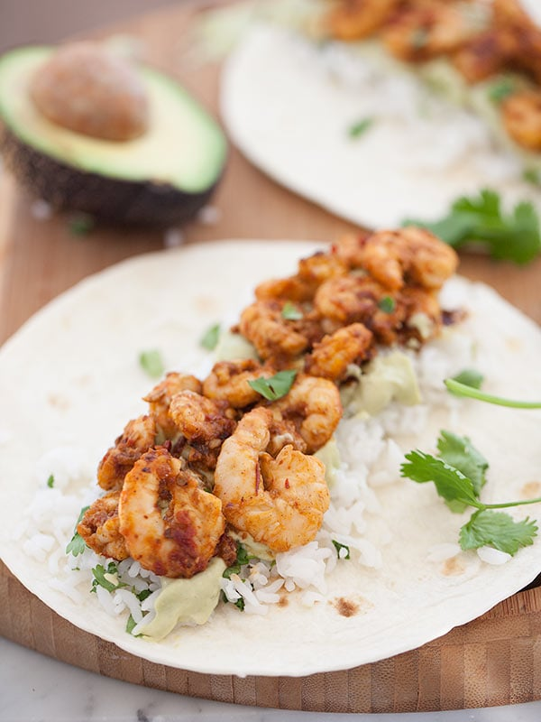
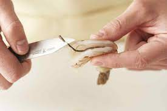
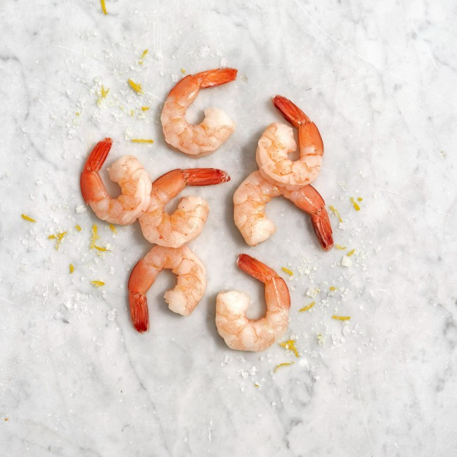
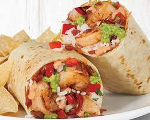

Simple, Tasty Shrimp Burritos
Shrimp burritos is one of my favorite things to make. Super simple, tasty, and low cost.
Ingredients
- 5-8 medium sized shrimp
- 1 tortilla
- shredded cheese
- sour cream
- butter
- salt
- pepper
- garlic
Steps
- Peel and devein your shrimp.

- Dry the shrimp, then add salt, pepper, and garlic.
- Heat stovetop to medium heat.
- Place pan on burner.
- Add butter and lemon to the pan.
- Cook shrimp for 3 minutes each side, or until each side is pink.

- Remove shrimp from the pan and reduce heat to medium low.
- Do not rinse pan. Place tortilla in pan.
- Add shrimp and cheese back onto the tortilla as it is cooking.
- This step can take less than a minute, so check the bottom of the tortilla often.
- Remove tortilla from pan.
- Add your cold toppings and sour cream.

ENJOY